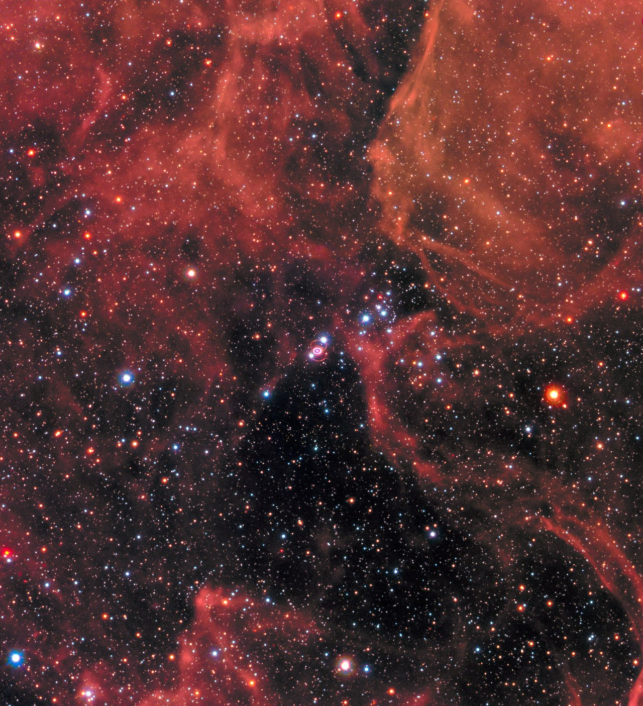

Supernova 1987A (SN 1987A) is a Type II supernova that occurred in the Large Magellanic Cloud on 23 February 1987, approximately 168,000 light-years from Earth. It was the closest supernova observed since Kepler's Supernova of 1604, and the first supernova from which neutrino emissions were directly detected. That detection marked the birth of neutrino astronomy.

NASA/ESA/R. Kirshner (Harvard-Smithsonian Center for Astrophysics and Gordon and Betty Moore Foundation)/P. Challis (Harvard-Smithsonian Center for Astrophysics)
Light from the explosion reached Earth on 23 February 1987. The supernova was discovered visually the following day by Ian Shelton and Oscar Duhalde at Las Campanas Observatory in Chile, and independently confirmed by Albert Jones in New Zealand. At its peak in May 1987 it reached apparent magnitude +2.9, making it visible to the naked eye from the Southern Hemisphere.
The progenitor star was identified as Sanduleak −69 202 (Sk −69 202), a B3 blue supergiant. This was unexpected: theoretical models at the time predicted only red supergiants as progenitors of Type II supernovae. The identification was confirmed when the star was found to have disappeared after the supernova faded. SN 1987A is therefore classified as a peculiar Type II event, and it has since prompted revisions to models of stellar evolution and core collapse.
Neutrino Detection
A burst of 25 antineutrinos was detected at 07:35 UT on 23 February 1987, between two and three hours before the optical brightening reached Earth. Three independent detectors recorded the signal: Kamiokande II in Japan (12 events), IMB in the United States (8 events), and Baksan in the Soviet Union (5 events). The burst lasted fewer than 13 seconds and carried a total energy of approximately 3 × 1046 J, consistent with theoretical predictions for a core-collapse event.
This was the first direct detection of neutrinos from a supernova. Masatoshi Koshiba shared the 2002 Nobel Prize in Physics in part for pioneering contributions to the detection of cosmic neutrinos, work that included the Kamiokande II observations. The detection also placed an upper limit on the electron neutrino rest mass of less than 16 eV/c2.
Light Curve and Radioactive Decay
The light curve of SN 1987A was powered in its first weeks by the decay of 56Ni (half-life 6 days) into 56Co. After the first few weeks, decay of 56Co (half-life 77 days) into 56Fe took over as the dominant energy source. Gamma-ray line emission from both 56Co and 57Co was detected directly, giving the first observational confirmation that radioactive decay powers supernova light curves. Today the luminosity is maintained by the decay of 44Ti, which has a half-life of around 60 years; the measured 44Ti mass in the ejecta is (3.1 ± 0.8) × 10−4 M☉.
The Triple-Ring Nebula
Hubble Space Telescope images of the remnant show a distinctive structure: a bright inner equatorial ring and two fainter outer rings, all composed of material shed by the progenitor star before the explosion. The inner ring has a radius of 0.66 light-years (angular size 0.808 arcseconds). Around 2001, the supernova blast wave, initially travelling at over 7,000 km/s, reached the inner ring and began producing a series of bright hotspots visible in successive Hubble images. By 2018 the shock had re-accelerated to about 3,600 km/s after passing through the ring. The ring structure is thought to reflect a complex mass-loss history for the progenitor, possibly involving a binary stellar merger roughly 20,000 years before the explosion.
Dust Formation
Large quantities of cold dust were found in the ejecta by the Herschel Space Observatory in 2011 and confirmed by ALMA in 2014. The total cold dust mass is about 0.25 M☉ at a temperature of roughly 26 K. Molecules including carbon monoxide (CO) and silicon monoxide (SiO) have also been detected in the ejecta. These observations support the idea that core-collapse supernovae are significant producers of interstellar dust, including in the early universe.
The Compact Remnant
Whether a neutron star or a black hole formed at the centre of SN 1987A was a long-standing question. Evidence has accumulated gradually. In 2019, ALMA observations provided indirect evidence for a neutron star, located within the brightest dust clump at the remnant's centre. In 2021, hard X-ray observations by NuSTAR and Chandra detected emission consistent with a pulsar wind nebula. In 2024, JWST observations identified ionised argon (Ar+ and Ar5+) and sulphur emission lines from the centre of the ejecta; producing these ions requires a source of high-energy radiation, and the findings were interpreted as the strongest evidence yet for a young neutron star (Fransson et al. 2024, Science).
See also: supernova, Type II supernova, core-collapse supernovae, supernova remnant, neutron star, neutrino, Large Magellanic Cloud.